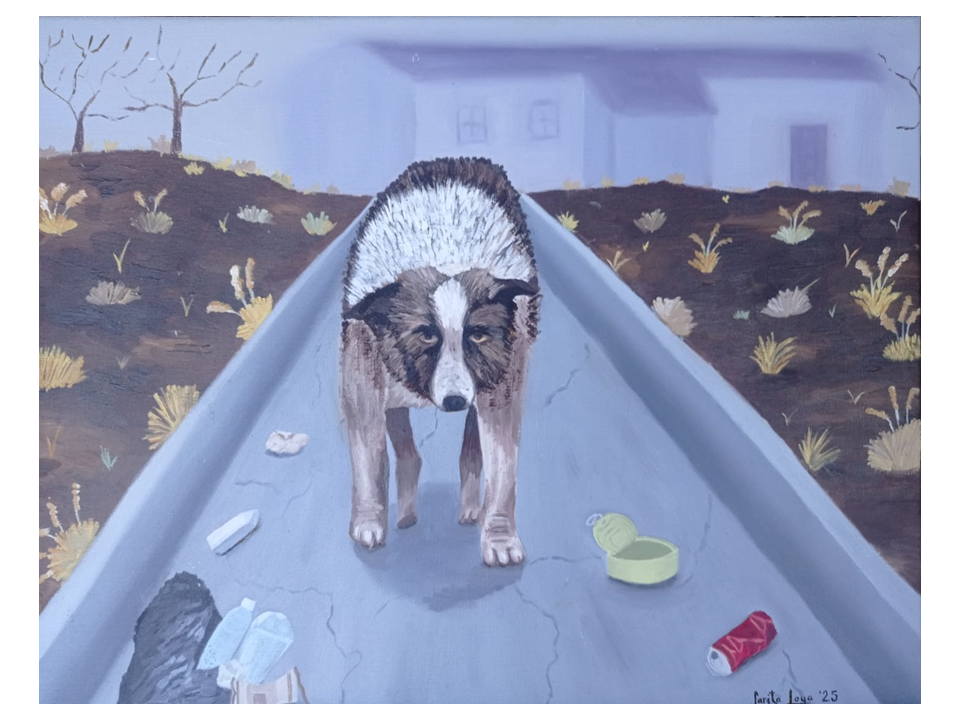
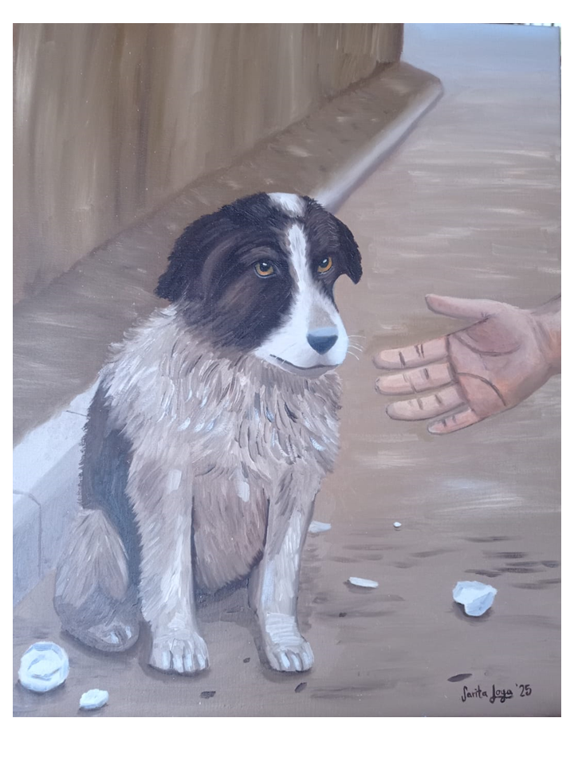
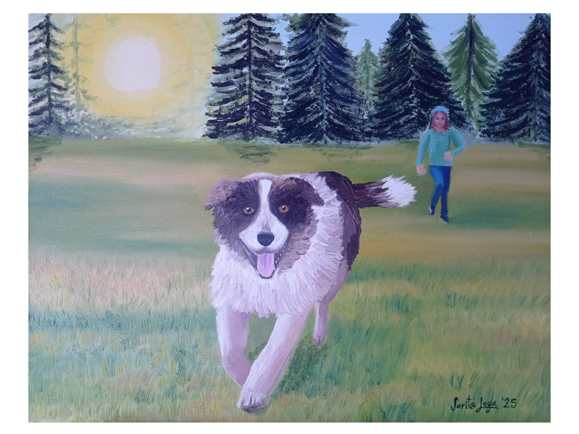

Serie titulada: Una segunda oportunidad

Soledad
Óleo · 2025 · 50 cm X 30 cm

Esperanza
Óleo · 2025 · 50 cm X 30 cm

Obras que exploran emociones, identidad y sensibilidad femenina a través del color, la textura y la intuición.